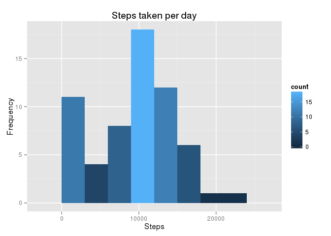
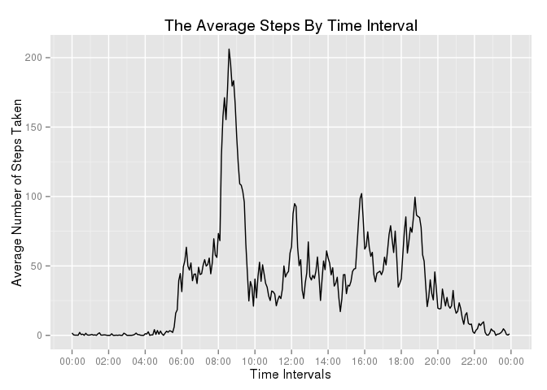

This assignment makes use of data from a personal activity monitoring device. This device collects data at 5 minute intervals through out the day. The data consists of two months of data from an anonymous individual collected during the months of October and November, 2012 and include the number of steps taken in 5 minute intervals each day.
The data for this assignment can be downloaded from the course web site:
The variables included in this dataset are:
The dataset is stored in a comma-separated-value (CSV) file and there are a total of 17,568 observations in this dataset.
Load the packages and options required for the R scripts.
library(knitr)
library(ggplot2)
library(data.table)
library(plyr)
require(scales)## Loading required package: scalesopts_chunk$set(fig.path="figure/")First the file is downloaded and unzipped in a folder called “data” in the current working directory of R; which is a prerequsite, prior to loading and processing the data.
The CSV file is imported into a data frame (named - “activityData”), and using the “colClasses” argument to specify the data type for each column.
classes <- c("integer", "Date", "integer" )
activityData <- read.csv(file = "./data/activity.csv", stringsAsFactors = FALSE, colClasses = classes)
summary(activityData)## steps date interval
## Min. : 0.00 Min. :2012-10-01 Min. : 0.0
## 1st Qu.: 0.00 1st Qu.:2012-10-16 1st Qu.: 588.8
## Median : 0.00 Median :2012-10-31 Median :1177.5
## Mean : 37.38 Mean :2012-10-31 Mean :1177.5
## 3rd Qu.: 12.00 3rd Qu.:2012-11-15 3rd Qu.:1766.2
## Max. :806.00 Max. :2012-11-30 Max. :2355.0
## NA's :2304str(activityData)## 'data.frame': 17568 obs. of 3 variables:
## $ steps : int NA NA NA NA NA NA NA NA NA NA ...
## $ date : Date, format: "2012-10-01" "2012-10-01" ...
## $ interval: int 0 5 10 15 20 25 30 35 40 45 ...Process/transform the data into a suitable format for analysis. The existing “interval” column in the data frame identifies the 5-minute interval in which measurement was taken, and is an integer value. Add a new column which converts the “interval” column into a time format (human readable).
intervalCol <- activityData$interval
activityData$timeInterval <- sprintf("%02d:%02d", intervalCol%/%100, intervalCol%%100)Use the aggregate function to calculate the total number of steps for each day (by date), saving the result to a data set called “stepsPerDay”; then using the setnames function, from the data.tables package, to set the column names.
Note: Missing values in the data set are ignored.
stepsPerDay <- aggregate(activityData$steps, by = list(activityData$date), FUN = sum, na.rm = TRUE)
setnames(stepsPerDay, c("date", "steps"))Take the data set “stepsPerDay” to be plotted, pass the “steps” column from the “stepsPerDay” data set as values on the x-axis and compute a histogram of this:
ggplot(stepsPerDay, aes(x = (steps))) +
labs( x = "Steps", y = "Frequency", title = "Steps taken per day") +
geom_histogram(binwidth = 3000 ,aes(fill = ..count..))
summary(stepsPerDay)## date steps
## Min. :2012-10-01 Min. : 0
## 1st Qu.:2012-10-16 1st Qu.: 6778
## Median :2012-10-31 Median :10395
## Mean :2012-10-31 Mean : 9354
## 3rd Qu.:2012-11-15 3rd Qu.:12811
## Max. :2012-11-30 Max. :21194meanValue <- mean(stepsPerDay$steps)
medianValue <- median(stepsPerDay$steps)The mean of the total number of steps taken per day is 9354.2295082.
The median of the total number of steps taken per day is 10395.
First step - Create a data set containing the mean of the steps for each five minute interval.
Note: Missing values in the data set are ignored.
avgStepsByInterval <- ddply(activityData, .(timeInterval), summarise, avgSteps=mean(steps, na.rm = TRUE))
summary(avgStepsByInterval)## timeInterval avgSteps
## Length:288 Min. : 0.000
## Class :character 1st Qu.: 2.486
## Mode :character Median : 34.113
## Mean : 37.383
## 3rd Qu.: 52.835
## Max. :206.170### Set the labels for the title, x-axis and y-axis
mainLab <- "The Average Steps By Time Interval"
xLab <- "Time Intervals"
yLab <- "Average Number of Steps Taken"
ggplot( data = avgStepsByInterval, aes(x = strptime(timeInterval, format="%H:%M"), y = avgSteps)) +
geom_line() +
labs(title = mainLab, x = xLab, y = yLab) +
scale_x_datetime(labels = date_format("%H:%M"),breaks = date_breaks("2 hour"))
maxAVGStepsInt <- avgStepsByInterval[which.max(avgStepsByInterval$avgSteps), ]
maxAVGStepsInt## timeInterval avgSteps
## 104 08:35 206.1698Note that there are a number of days/intervals where there are missing values (coded as NA). The presence of missing days may introduce bias into some calculations or summaries of the data.
summary(activityData)## steps date interval timeInterval
## Min. : 0.00 Min. :2012-10-01 Min. : 0.0 Length:17568
## 1st Qu.: 0.00 1st Qu.:2012-10-16 1st Qu.: 588.8 Class :character
## Median : 0.00 Median :2012-10-31 Median :1177.5 Mode :character
## Mean : 37.38 Mean :2012-10-31 Mean :1177.5
## 3rd Qu.: 12.00 3rd Qu.:2012-11-15 3rd Qu.:1766.2
## Max. :806.00 Max. :2012-11-30 Max. :2355.0
## NA's :2304missingValues <- sum(is.na(activityData$steps))
missingValues### [1] 2304The total number of missing values in the activityData data set is 2304.
The mean of the 5-minute interval is used to fill in the missing values (NAs) from the ‘activityData’ data set. This is incorporated into a new data set called ‘fillNAs’.